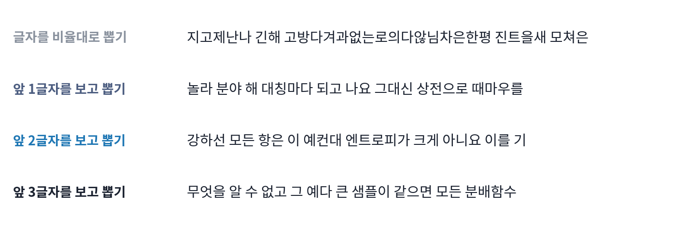
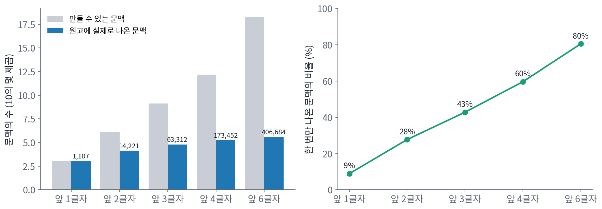
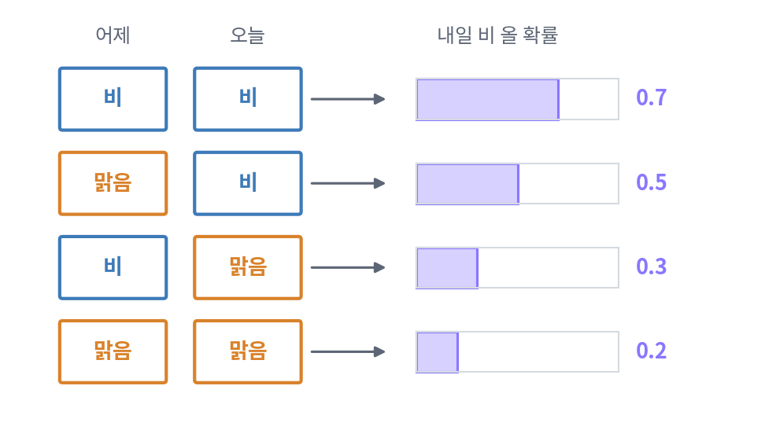
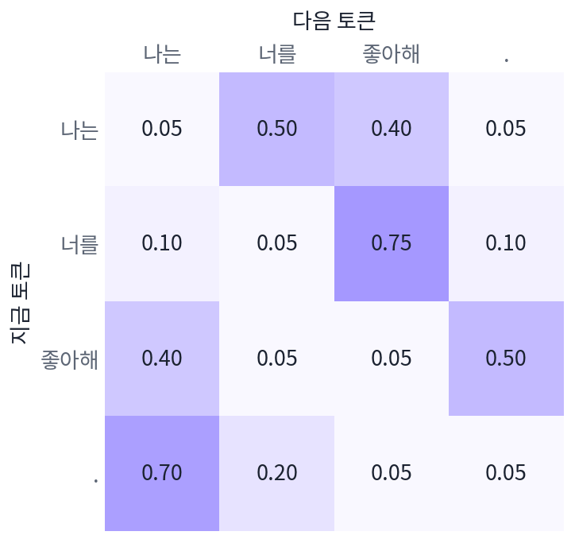

k차 마르코프 체인: 상태를 넓히면 다시 체인이 된다
마르코프의 체인은 바로 앞 글자 하나만 보았고, 그래서 모음이 셋 이어지는 횟수처럼 앞 글자 하나로는 맞히지 못하는 것이 남았다. 섀넌이 영어 글을 흉내 낼 때는 앞 두 글자를 보았고, 오늘날의 언어 모델은 앞 토큰 수천 개를 본다. 앞 글자를 여럿 보는 순간 「다음은 지금만 보고 정한다」는 체인의 성질은 깨지는 것일까? 깨진다면 지금까지 본 정상 분포와 에르고드 정리는 언어 모델에 쓸 수 없게 된다.
역사: 섀넌의 마르코프 과정
섀넌은 1948년 논문에서 영어 글을 내보내는 원천을 마르코프 과정으로 다루었다. 글자를 비율대로 뽑는 원천, 앞 글자 하나를 보고 다음 글자를 뽑는 원천, 앞 두 글자를 보는 원천을 차례로 늘어놓고, 앞을 많이 볼수록 가짜 글이 영어를 닮아 간다는 것을 보였다. 그는 「에르고드 원천과 섞인 원천」이라는 절을 따로 두어, 이런 원천의 통계를 긴 글 하나에서 셀 수 있으려면 원천이 에르고드적이어야 한다는 점도 짚었다. 그가 적은 조건은 글자 사이의 전이 그림이 서로 오가지 않는 두 덩어리로 나뉘지 않을 것, 그리고 그림 속 고리 길이들의 최대공약수가 1일 것이었다. 앞에서 본 에르고드 정리의 두 조건 「갇힌 곳이 없다」와 「주기가 없다」와 같다. 긴 글 한 편에서 센 비율이 그 언어의 모든 글을 모아 센 비율과 같아야 한다는 것, 곧 시간 평균과 분포 평균이 같아야 한다는 것이다.


앞 두 글자를 보는 가짜 글이면, 지금은 글자 세 개짜리 줄을 세서 표를 만들면 끝이에요. 텍스트 파일 하나면 되죠.

1948년의 섀넌에게는 그 텍스트 파일도, 줄을 세어 줄 컴퓨터도 없었어요. 그럼 앞 두 글자를 보는 표를 어떻게 얻었을까요?

글자 26개에 띄어쓰기까지 27가지면, 앞 두 글자의 경우가 27 × 27 = 729가지예요. 그 뒤에 오는 글자까지 손으로 다 세는 건… 너무 많네요.

섀넌은 표를 만들지 않았어요. 책을 아무 데나 펴서 앞 두 글자와 같은 짝이 나오는 곳을 찾고, 그 바로 뒤의 글자를 적는 일을 되풀이했다고 논문에 적었어요. 책 한 권이 표 노릇을 한 거예요.

아, 책 한 권에 영어의 통계가 이미 담겨 있다고 본 거네요. 그 책이 영어를 대표하지 못하면 엉뚱한 글이 나올 텐데요.

그래서 섀넌이 에르고드 원천을 따로 짚었구나. 긴 글 하나에서 센 비율이 언어 전체의 비율과 같아야 책을 펴는 방법이 통하니까요.

그런데 앞 두 글자를 보는 원천은 「지금만 보고 다음을 정하는」 체인이 아니잖아요. 그래도 에르고드 정리를 쓸 수 있어요?
앞 두 글자를 한 상태로
앞 두 글자를 보는 원천에서 다음 글자의 확률은 앞 글자 둘에 기대는데, 「앞 두 글자」를 한 덩어리의 상태로 보면 어떨까? 상태가 (x₁, x₂)일 때 다음 글자 x₃를 뽑으면 새 상태는 (x₂, x₃)이고, 이 새 상태의 확률은 지금 상태 (x₁, x₂)만으로 정해진다. 상태를 짝으로 넓히자 다시 체인이 된 것이다. 이처럼 다음 상태의 확률이 바로 앞 k개의 상태에 기대는 과정을 k차 마르코프 체인 (앞 k개를 보는 체인, k-th order Markov chain)이라 하고, 앞 k개를 한 덩어리로 묶은 것을 상태로 삼으면 언제나 보통의 체인으로 바뀐다. 다만 상태의 수가 글자 종류의 k제곱으로 늘어난다.
이 책의 원고에서 얼마나 늘어나는지 세어 보자. 이 장을 뺀 2~17장 원고(1장은 같은 날 다른 작업이 고치고 있어 뺐다)에서 한글 음절과 띄어쓰기만 남기면 47만 7,525글자이고, 서로 다른 글자는 1,066가지다. 앞 k글자를 문맥으로 삼을 때 만들 수 있는 문맥의 수와 원고에 실제로 나온 문맥의 수를 비교하면 다음과 같다.
| 앞 글자 수 | 만들 수 있는 문맥 | 실제로 나온 문맥 | 그 가운데 한 번만 나온 것 |
|---|---|---|---|
| 1 | 1,066 | 1,066 | 9.5% |
| 2 | 약 114만 | 12,993 | 29.6% |
| 3 | 약 12억 | 55,136 | 44.7% |
| 4 | 약 1.3조 | 144,183 | 61.3% |
| 6 | 약 1.5 × 10^18 | 322,011 | 81.6% |
앞 여섯 글자를 보면 실제로 나온 문맥 10개 가운데 8개는 원고 전체에서 딱 한 번 나온다. 한 번 나온 문맥에서 「다음 글자의 확률」을 세면, 그 한 번 뒤에 온 글자의 확률이 1이 될 뿐이다. 앞을 길게 볼수록 다음 글자를 잘 맞힐 것 같지만, 세어서 만든 전이 행렬은 대부분의 행이 비거나 한 번의 우연으로 채워진다.

ML에서: 언어 모델은 아주 큰 체인이다
언어 모델 GPT-2는 토큰 종류가 50,257개이고 앞 토큰을 1,024개까지 본다. 앞 1,024개를 상태로 삼으면 언어 모델이 글을 뽑는 일은 상태가 50,257^1024 ≈ 10^4814가지인 체인 위를 걷는 일이다. 이런 전이 행렬은 세어서 만들 수도 저장할 수도 없다. 언어 모델은 행렬을 적어 두는 대신, 상태(앞 토큰들)를 받아 그 행(다음 토큰의 확률)을 그때그때 계산하는 신경망이다. 처음 보는 문맥에서도 비슷한 문맥에서 배운 것을 나눠 쓰므로, 한 번만 나온 문맥의 행이 한 번의 우연으로 채워지는 문제를 피한다.
상태를 이렇게 크게 잡아도 체인은 체인이라서, 이 장에서 본 성질이 그대로 나타난다. 다음 토큰을 확률대로 뽑지 않고 가장 큰 확률의 토큰만 고르는 그리디 디코딩은 같은 상태에서 늘 같은 다음 상태로 가는 체인이다. 상태의 수가 아무리 커도 유한하면, 이런 체인은 언젠가 앞에 나온 상태를 다시 만나고 그 뒤로는 같은 길을 되풀이한다. 언어 모델이 그리디 디코딩에서 같은 구절을 되풀이하는 현상은 홀츠먼 외(2020) 등이 보고했고, 온도를 두고 확률대로 뽑는 샘플링이 그 되풀이를 깨는 이유를 아래 문제 20에서 작은 모델로 확인해 보자.
문제 19. 이틀을 보는 날씨
어느 도시에서 내일 비 올 확률은 어제와 오늘의 날씨에 따라 다음과 같다: 어제 비, 오늘 비 → 0.7. 어제 맑음, 오늘 비 → 0.5. 어제 비, 오늘 맑음 → 0.3. 어제 맑음, 오늘 맑음 → 0.2. (가) 오늘 날씨만을 상태로 삼으면 마르코프 체인인가? (나) 체인이 되게 상태를 잡고 전이 행렬을 적어라. (다) 오래 보면 비 오는 날의 비율은 얼마인가?

오늘 비가 오면 내일 비 올 확률이 0.7이거나 0.5니까, 평균 0.6으로 두면 오늘만 보는 체인이 되지 않을까요?
오늘 비가 왔다는 것만 알 때 내일 비 올 확률은 하나로 정해지나요?
어제가 비였으면 0.7, 맑았으면 0.5라서 어제를 모르면 안 정해지네요. 평균을 내려 해도 어제가 비였을 확률을 알아야 하고요.

(어제, 오늘)을 한 상태로 잡으면 돼요. 비비, 비맑, 맑비, 맑맑 네 상태예요.

비비에서 하루가 지나면 어느 상태로 갈 수 있죠?
오늘이 내일의 어제가 되니까… 비비 아니면 비맑이에요. 0.7로 비비, 0.3으로 비맑.

그럼 비맑에서는 0.3으로 맑비, 0.7로 맑맑. 맑비에서는 0.5씩 비비와 비맑으로, 맑맑에서는 0.2로 맑비, 0.8로 맑맑으로 가고.

행마다 0이 아닌 칸이 둘뿐이에요. 다음 상태의 앞 글자는 지금 상태의 뒷 글자로 정해져 있으니까요.
정상 분포를 구하니까 비비 0.233, 비맑 0.140, 맑비 0.140, 맑맑 0.488이에요. 오늘 비인 상태는 비비와 맑비니까 0.233 + 0.140 = 0.372예요. 100만 일을 모의실험해도 0.371이고요.

좋아요. 그럼 오늘 비라는 것만 알 때 내일 비 올 확률은, 오래 본 평균으로 얼마죠?
오늘 비인 날 가운데 어제도 비였던 날이 0.233/0.372, 어제 맑았던 날이 0.140/0.372예요.
두 경우의 내일 비 올 확률은요?
0.7과 0.5요. 아, 그걸 반반이 아니라 그 비율로 섞어야 하는구나.
0.233 대 0.140으로 섞으면 0.625예요. 민준이가 말한 0.6이 아니네요. 어제가 비였던 날이 더 많아서요.

성적표에 이번 학기 학점만 있으면 다음 학기를 잘 못 맞히는데, 지난 학기까지 두 줄을 보면 더 잘 맞히는 거랑 같네요. 대신 경우의 수가 늘고요.
문제 20. 그리디 디코딩은 왜 맴돌까?
토큰이 「나는」, 「너를」, 「좋아해」, 「.」 넷뿐이고 바로 앞 토큰만 보는 장난감 언어 모델이 있다. 다음 토큰의 확률은 아래와 같다(행은 지금 토큰, 칸 순서는 나는, 너를, 좋아해, .). 나는 → (0.05, 0.50, 0.40, 0.05), 너를 → (0.10, 0.05, 0.75, 0.10), 좋아해 → (0.40, 0.05, 0.05, 0.50), . → (0.70, 0.20, 0.05, 0.05). (가) 「나는」에서 시작해 늘 가장 큰 확률의 토큰만 고르면 무엇이 나오는가? (나) 온도 1로 확률대로 뽑으면 오래 보아 토큰마다 나오는 비율은? (다) 상태가 아무리 많아도 그리디 디코딩은 언젠가 같은 구절을 되풀이하는가?

(가)는 「나는 너를 좋아해 . 나는 너를 좋아해 . 나는 너를」… 네 토큰이 끝없이 되풀이돼요. 확률이 제일 큰 것만 골랐는데 글이 이상해졌어요.
왜 되풀이될 수밖에 없을까요? 그리디 디코딩에서 다음 상태는 지금 상태로 몇 가지가 될 수 있죠?
늘 한 가지예요.
그런데 상태는 넷뿐이에요. 토큰을 다섯 개 늘어놓으면요?
다섯 번째 토큰까지 가는 동안 같은 상태가 적어도 한 번은 다시 나와요. 비둘기집이요. 같은 상태에서는 늘 같은 다음 상태로 가니까, 한 번 다시 만나면 그 뒤로는 같은 고리를 영원히 돌아요.
(다)도 같은 논리일까요? 앞 1,024개 토큰을 상태로 보는 큰 모델이라면요?
상태가 10^4814가지라도 유한하니까 논리는 같아요. 언젠가는 반드시 되풀이해요. 실제로는 그보다 훨씬 빨리 되풀이가 시작될 수 있고요. 결정론적인 체인은 처음 상태가 정한 고리 하나에 갇히는 거네요.
(나)는 정상 분포를 구하니까 나는 0.293, 너를 0.211, 좋아해 0.300, . 0.196이에요. 10만 토큰을 뽑아 세도 거의 같아요. 확률대로 뽑으면 어느 토큰에서든 다른 토큰으로 갈 길이 열려 있고, 같은 토큰으로 바로 다시 갈 수도 있으니까 갇힌 곳도 없고 주기도 없어요.
그래요. 그리디 디코딩은 온도를 0으로 내린 극한이에요. 온도를 0.5로 낮추면 「너를 → 좋아해」가 0.962가 되는 식으로 큰 확률이 더 커지지만, 0이 아닌 길이 남아 있는 한 갇힌 고리는 생기지 않아요. 온도는 체인이 고리를 벗어나는 데 걸리는 스텝 수도 정해요.
동아리 회의에서 늘 제일 무난한 의견만 고르면 회의가 매주 같은 얘기로 돌아가는 거랑 같네요. 가끔은 덜 무난한 의견도 골라야 빠져나오고요.